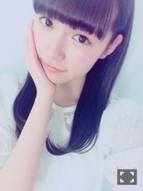

| 2015/04 13 Mon | ひめたん-OoO-その534 |
4月13日
19回目のお誕生日を迎えました！

この春高校卒業して
今はお仕事のことで頭がいっぱい。
学校がない分、今まで以上に
自由な時間が増えたから、最近は
改めて自分を見つめ直すようになって
自分にはこのスキルが足りないな
もっと器用にこなせるようになりたいな
そんなことを考えながら過ごす日々は
楽しくて仕方ないです( ˇωˇ )
今年は、今までで1番
みなさんに恩返しできるような
1年間にしたい！
自分でリミットを決めずに
一つひとつの活動に全力で取り組んで
反省して、吸収して、成長したい。
いつ如何なる時も
100%の状態を出せるように
常に準備万端の状態をキープしたい。
プライベートでは
最近自分の経験値の少なさに
がっかりすることが多いので
本を読んだり、映画を観たり、
音楽やラジオを聴いたりして
感性を磨きたい！
料理もできるようになりたい！
ラストティーン！！
ぼーっと過ごすのだけはやめよう！
濃ゆい1年にするぞー！

私と同じお誕生日なのが
去年の4月13日にスタートした
アンダーライブ。
私は惜しくも
アンダーライブ皆勤賞ということで
成長の過程をずっと見てきました
1年経った今、こうして
続けられているなんて
あの時は思ってもみなかったな
しかも私たちメンバーにとって
こんなに大きな存在になっていて、
みなさんからも愛されているなんて。
アンダーライブ3rdシーズン
明日からいよいよはじまります！
まずは、またこうして
ステージに立てることが幸せです。
おかげさまで3rdシーズンを
迎えることができますが
これを当たり前と思ってはいけない
私たちのために
素敵な舞台を用意してくださった
全ての方への感謝の気持ちを持って、
パフォーマンスで応えたいです。
11thアンダーメンバー
それぞれがいろんなものを抱えて
このステージに臨みます。
11th選抜が発表されてから今日まで
悔しかったこと、悩んだこと、
各々あったと思います
いろんな巡り合わせで集まった20人
見てきた景色は違うかもしれないけれど
この8公演は一緒に駆け抜けよう！
後にも先にも後悔のないよう
今の自分に出せる全力を出し切って
それぞれが今後に繋げよう！
私は以前からよく
アンダーライブのMCで
言っていた言葉があります
「ここは全員が主役になれる場所」
全員が主役だから、
全員がそれぞれの色で輝いていい
輝いているべき、と思う。
仕掛けに頼らず、
パフォーマンスで魅せるのが
アンダーライブ
客席との距離が近いから
常に全力、常に自分の限界を
求められるのがアンダーライブ
アンダーライブだからこそできること
アンダーライブでしかできないこと
きっとたくさんあると思う
居場所にするのは違うけれど
この期間にそれぞれが
何かを掴めたらいいな。
もちろん、1番は私自身が
この8公演でさらに
成長しなければ......
そんなことを考えながら
リハをしています(´｡･v･｡｀)
楽しみにしててね♡
さゆちゃんのブログ
本当に嬉しかった。
さゆちゃんのこと書くと
長くなってしまいそうなので
近々めーるでお話しますね～＊
乃木どこ最終回も今日この後。
4月13日は乃木坂史上
歴史に残る出来事がいっぱいだ！
私たちのデビュー前から
ずっと一緒に歩んできた初の冠番組
どうか最後まで見届けて下さい。
中元日芽香
コメント(1894)
2015/04/13 00:00